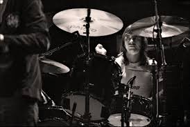
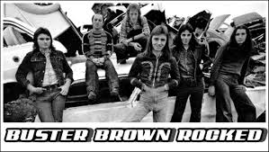

Lahir pada 19 Mei 1954 di Melbourne, Australia dengan nama Phillip Hugh Norman Witschke Rudzevecuis dari orangtua Lithuania. Rudd mulai bermain drum di usia remajanya dan menjadi serius tentang menjalani karir di musik. Dia bermain di beberapa band di Melbourne sebelum bergabung Buster Brown dengan vokalis masa depan Rose Tattoo Angry Anderson. Mereka merilis satu album, Something To Say, pada 1974, sebelum Rudd pergi untuk bergabung Coloured Balls dengan Lobby Loyde.

Pada 1974 Rudd diberitahu tentang audisi seksi ritem AC/DC oleh mantan rekan seband Coloured Balls Trevor Young (tidak ada hubungan kelurga dengan Young bersaudara dari AC/DC). Rudd meminta bassi Buster Brown Geordie Leach untuk menemaninya ke audisi itu, tapi Leach menolak karena komitmen lain. Rudd diaudisi dan segera dipekerjakan. Gaya permainan drum Rudd cocok dengan gaya musik band dan menjadi bagian integral dari musik AC/DC dari 1975 hingga 1983. Band pindah ke UK pada 1976 dan mengikuti jadwal padat dari tur dan rekaman internasional.
Keluarnya Rudd pada 1983 dari AC/DC adalah bagian dari akibat masalah pribadinya juga konflik dengan gitaris ritem dan pendiri band Malcolm Young, yang akhirnya meningkat menjadi pertikaian fisik. Mengikuti pemecatannya, Rudd pensiun ke Tauranga, Selandia Baru dimana dia membeli sebuah perusahaan helicopter. Kepergian Rudd dari AC/DC tidak diketahui secara luas hingga malam di tur Amerika Utara pada 1983. Di beberapa halaman terakhir dari Circus Magazine edisi Oktober 1983 dikatakan “Phil Rudd meninggalkan AC/DC… untuk menghabiskan lebih banyak waktu dengan keluarga dan mobil-mobilnya, tapi kami tidak saling bertengkar”. Vokalis Brian Johnson menambahkan dalam wawancara Hit Parader dari periode yang sama “Anda tidak bisa menemukan pribadi atau drummer yang solid daripada Phil Rudd. Tidak satupun dari kami tidak akan bekerja jika kami tidak ingin…Phil memilih opsi itu”.
AC/DC menyambut kembali Rudd mengikuti syarat Chris Slade sebagai drummer band. Band memuji Slade untuk penampilan dan kemampuan teknisnya, tapi beranggapan bahwa beberapa ciri hilang dari AC/DC sejak kepergian Rudd pada 1983. Sejak bergabung kembali ke band, dia tampil di 4 album studio AC/DC, Ballbreaker, Stiff Upper Lip, Black Ice, dan Rock or Bust, dengan Black Ice menjadi hit terbesar band di tangga album sejak For Those About To Rock We Salute You pada 1981.
Pada tahun 2003, dia dinobatkan ke dalam Rock N' Roll Hall Of Fame bersama dengan anggota lain AC/DC.
Pada 29 Agustus 2014 dia merilis album solonya, Head Job melalui Universal Record.